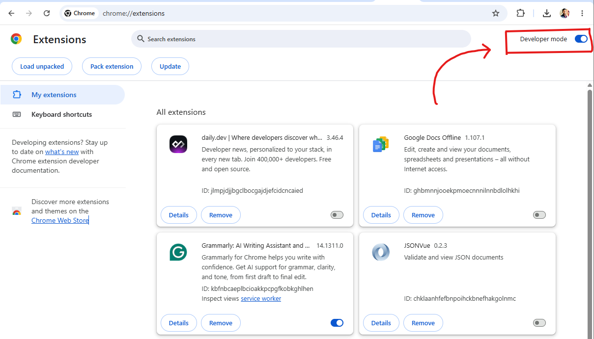
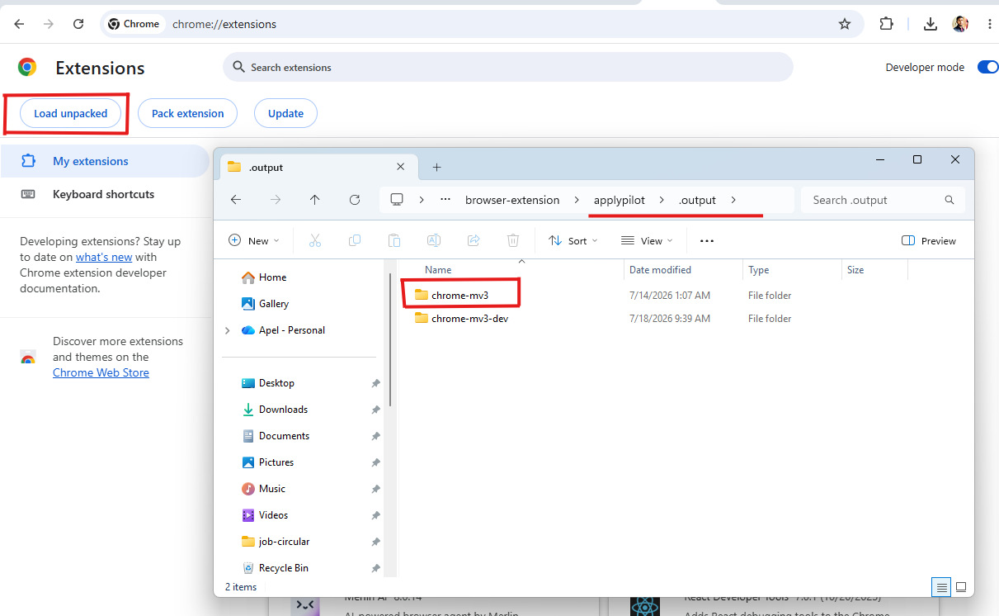

Applypilot is still pre-launch, so for now it's loaded straight from source. It takes about five minutes and only needs Node.js and pnpm on your machine.
This switches every command below — pick your browser once.
Firefox support is still under development. Some features may not work correctly yet — use it for testing, and expect rough edges until this is ironed out.
Make sure the following tools are installed before you start:
Node.js
A recent LTS release. Get it at nodejs.org.
pnpm
Used to install packages and run every script below. Get it at pnpm.io.
From the project root, install everything the extension needs:
pnpm installRuns the extension with live reload while you work on it.
pnpm devpnpm dev:firefoxOptional, but useful before you build — checks the project for type errors.
pnpm compileBuilds an optimized version of the extension into the output directory.
pnpm buildpnpm build:firefoxOptional — zips the build so it can be shared or submitted later.
pnpm zippnpm zip:firefoxWith Chrome or a Chromium-based browser, load the unpacked build:
Run the extension in development mode, or build it for production:
pnpm dev
pnpm build
Open the Chrome extensions page:
chrome://extensions
Enable Developer mode, top right of the page.

Click Load unpacked.
Select the generated WXT output directory.

With Firefox, load the build as a temporary add-on:
Run the extension in development mode, or build it for production:
pnpm dev:firefox
pnpm build:firefox
Open the Firefox debugging page:
about:debugging
Select This Firefox in the sidebar.
Click Load Temporary Add-on.

Select the generated extension manifest from the build output.
Open a supported job posting and click the Applypilot icon in your toolbar to try it.
Back to the overview